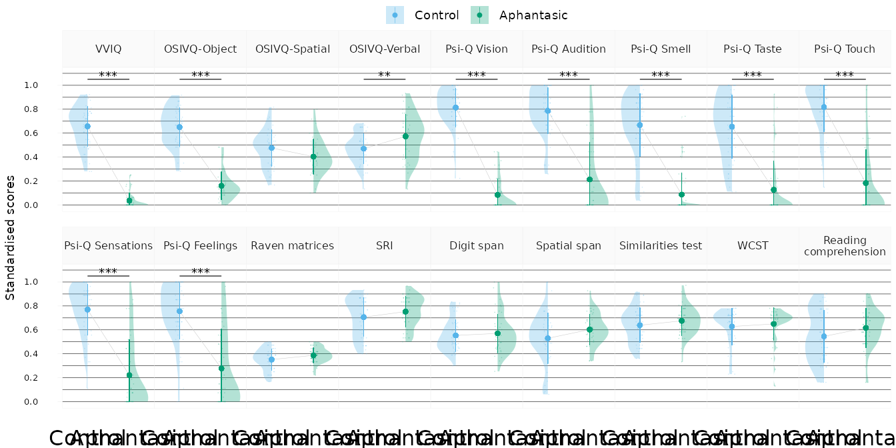

This document contains the entire data analysis pipeline aphantasiaCognitiveClustering was built for and the associated results reported in the article “Unsupervised clustering reveals spatial and verbal cognitive profiles in aphantasia and typical imagery” (Delem et al., 2025).
The main dataset used for the analysis is included in the package as
the study_data data frame.
library(aphantasiaCognitiveClustering)
head(study_data) |> knitr::kable()| id | age | sex | group | education | field | field_code | occupation | occupation_code | vviq | osivq_o | osivq_s | osivq_v | psiq_vis | psiq_aud | psiq_od | psiq_gout | psiq_tou | psiq_sens | psiq_feel | score_raven | score_sri | span_spatial | span_digit | wcst_accuracy | score_similarities | score_comprehension |
|---|---|---|---|---|---|---|---|---|---|---|---|---|---|---|---|---|---|---|---|---|---|---|---|---|---|---|
| 7210 | 25 | m | Control | Master | Social sciences, journalism, information | 3 | Health | 5 | 65 | 45 | 45 | 54 | 8.00 | 7.67 | 8 | 7.33 | 8.33 | 8.67 | 8.00 | 14 | 27 | 5.43 | 6.07 | 78 | 30 | 24 |
| 7213 | 22 | f | Control | Master | Social sciences, journalism, information | 3 | Student | 3 | 59 | 47 | 45 | 47 | 7.67 | 9.00 | 6 | 8.67 | 9.00 | 9.00 | 7.00 | 17 | 26 | 3.79 | 6.14 | 72 | 27 | 23 |
| 7238 | 52 | f | Control | Bachelor | Natural sciences, mathematics, statistics | 5 | Information, Communications | 8 | 43 | 44 | 46 | 44 | 7.00 | 7.33 | 7 | 6.67 | 7.00 | 6.00 | 7.00 | 11 | 22 | 2.79 | 3.93 | 67 | 26 | 24 |
| 7242 | 48 | f | Control | Post-secondary | Business, Administration, Law | 4 | Business, Administration | 7 | 73 | 46 | 35 | 23 | 7.67 | 8.33 | 9 | 7.00 | 8.67 | 7.33 | 8.00 | 7 | 15 | 2.14 | 3.50 | 25 | 20 | 16 |
| 7254 | 37 | f | Aphantasic | Doctorate | Health and Welfare | 9 | Health | 5 | 16 | 32 | 30 | 50 | 1.00 | 1.00 | 1 | 1.00 | 1.00 | 1.00 | 1.00 | 12 | 16 | 3.36 | 3.07 | 45 | 22 | 20 |
| 7257 | 36 | m | Control | Bachelor | Natural sciences, mathematics, statistics | 5 | Business, Administration | 7 | 55 | 64 | 48 | 47 | 6.67 | 8.00 | 7 | 3.33 | 5.00 | 7.00 | 8.67 | 12 | 26 | 4.00 | 3.57 | 23 | 29 | 9 |
VVIQ group analysis
We first analysed the data in light of the VVIQ groups, examining differences between individuals with aphantasia and controls.
Demographic variables
We tested the education level, fields of study and occupations of the
participants for any association with the two groups. The
get_association_models() function was designed to compute
Bayes Factors for associations between a grouping variable (here
group) and the variables education,
field and occupation in the data. The
computation relies on the BayesFactor
package.
The associated function format_association_table()
extracts the contingency table from the nested output of
get_association_models() and formats it into a clean
table.
df_association <- get_association_models(study_data, group)
df_association |> dplyr::select(Variable, log_bf10)
#> # A tibble: 3 × 2
#> # Rowwise: Variable
#> Variable log_bf10
#> <chr> <dbl>
#> 1 Education -4.88
#> 2 Field -5.41
#> 3 Occupation -4.37
format_association_table(df_association, "Education")
#> # A tibble: 6 × 3
#> Education Control Aphantasic
#> <fct> <int> <int>
#> 1 Other 5 4
#> 2 Upper secondary 1 0
#> 3 Post-secondary 9 5
#> 4 Bachelor 17 17
#> 5 Master 17 16
#> 6 Doctorate 2 3
format_association_table(df_association, "Field")
#> # A tibble: 11 × 3
#> Field Control Aphantasic
#> <fct> <int> <int>
#> 1 Generic programmes 4 4
#> 2 Education 1 1
#> 3 Arts, humanities 9 12
#> 4 Social sciences, journalism, information 11 4
#> 5 Business, Administration, Law 10 8
#> 6 Natural sciences, mathematics, statistics 6 4
#> 7 Information, communication technologies 4 4
#> 8 Engineering, manufacturing, construction 3 3
#> 9 Agriculture, forestry, fisheries, veterinary 1 1
#> 10 Health and Welfare 2 3
#> 11 Services 0 1
format_association_table(df_association, "Occupation")
#> # A tibble: 9 × 3
#> Occupation Control Aphantasic
#> <fct> <int> <int>
#> 1 No answer 1 1
#> 2 Unemployed 1 1
#> 3 Student 20 12
#> 4 Science and Engineering 2 4
#> 5 Health 2 6
#> 6 Teaching 4 3
#> 7 Business, Administration 9 10
#> 8 Information, Communications 8 6
#> 9 Social, Cultural, Legal 4 2Main score variables
We analysed the main questionnaire and task score variables in the data, which are: the VVIQ, the three OSIVQ subscales (object, spatial, verbal), the seven Psi-Q subscales (vision, auditory, smell, taste, touch, sensations, feelings), the Raven matrices, the SRI (spatial test), the digit span, the spatial span, the similarities test, the WCST (executive functions test), and the reading comprehension task.
We fitted Bayesian linear models to the various variables to model them with participant groups as categorical predictors and age as a continuous covariate so as to control for the potential influence of the latter. We used the bayestestR package to compute the Bayes Factor for inclusion of the grouping variable and the age covariate in the models. To get Bayes Factors for the contrasts between the groups, we fitted models for the prior and posterior distributions using the rstanarm package (with default settings) then used the emmeans package to compute the contrasts.
The get_mean_sd() function provides a quick way to
compute and format the mean and standard deviation of the variables for
each group, while the get_bf_inclusion() and
get_contrast_bf() functions take care of the two modelling
steps described above. All three are wrapped in the
get_full_model_table() function, which is designed to run
the full analysis pipeline for each variable in any long format data
frame with the appropriate columns. The get_longer()
function is designed to perform this transformation from wide to long
format easily, returning clean column names and values.
study_data |>
get_longer() |>
dplyr::select(id, Group, Variable, value) |>
head()
#> # A tibble: 6 × 4
#> id Group Variable value
#> <chr> <fct> <fct> <dbl>
#> 1 7210 Control VVIQ 65
#> 2 7210 Control OSIVQ-Object 45
#> 3 7210 Control OSIVQ-Spatial 45
#> 4 7210 Control OSIVQ-Verbal 54
#> 5 7210 Control Psi-Q Vision 8
#> 6 7210 Control Psi-Q Audition 7.67The code to fit everything is straightforward:
study_data |> get_longer() |> get_full_model_table(Group)The number of models to fit is quite large, so this code does not run
here. However, the results are saved natively in the package in the
models_list object. The resulting data frame for the two
groups is the first item of this list:
models_list$group_models |>
filter_study_variables("original") |>
dplyr::select(!Comparison) |>
knitr::kable()| Variable | Control | Aphantasic | Group | Age | Group Age | Difference () | 95% CrI | |
|---|---|---|---|---|---|---|---|---|
| VVIQ | 58.08 (10.81) | 18.33 (4.24) | 84.58 | -1.67 | -1.41 | 39.67 | [36.21, 43.18] | 64.33 |
| OSIVQ-Object | 54.04 (9.63) | 24.6 (6.96) | 61.48 | -1.40 | -0.82 | 29.37 | [25.76, 32.76] | 37.94 |
| OSIVQ-Spatial | 43.59 (9.25) | 39.22 (8.75) | 0.56 | -1.68 | -1.72 | 4.46 | [0.84, 8.29] | -0.70 |
| OSIVQ-Verbal | 43.22 (7.52) | 49.38 (11.13) | 2.62 | -1.23 | -1.16 | -6.39 | [-10.12, -2.53] | 1.63 |
| Psi-Q Vision | 8.33 (1.47) | 1.76 (1.21) | 86.57 | -1.39 | -1.28 | 6.55 | [6, 7.1] | 58.94 |
| Psi-Q Audition | 8.08 (1.74) | 2.92 (2.79) | 35.38 | -0.38 | 0.67 | 5.08 | [4.15, 5.96] | 24.25 |
| Psi-Q Smell | 7.01 (2.36) | 1.78 (1.61) | 42.08 | -1.31 | -0.45 | 5.21 | [4.38, 6.05] | 26.51 |
| Psi-Q Taste | 6.88 (2.37) | 2.14 (2.15) | 31.43 | -0.89 | -0.42 | 4.66 | [3.76, 5.59] | 17.89 |
| Psi-Q Touch | 8.36 (1.84) | 2.64 (2.51) | 43.99 | 0.48 | 1.37 | 5.62 | [4.73, 6.47] | 30.68 |
| Psi-Q Sensations | 7.93 (1.9) | 2.99 (2.67) | 33.35 | 0.65 | 1.51 | 4.82 | [3.93, 5.73] | 19.56 |
| Psi-Q Feelings | 7.8 (2.11) | 3.5 (2.97) | 23.47 | 1.99 | 2.64 | 4.16 | [3.17, 5.14] | 14.29 |
| Raven matrices | 12.67 (3.23) | 13.93 (2.27) | 0.24 | -1.44 | -1.34 | -1.22 | [-2.35, -0.03] | -1.30 |
| SRI | 21.18 (4.86) | 22.58 (3.8) | -0.81 | -1.80 | -2.24 | -1.45 | [-3.3, 0.28] | -2.20 |
| Digit span | 4.07 (0.98) | 4.2 (1.19) | -1.73 | -1.68 | -2.88 | -0.14 | [-0.59, 0.31] | -3.28 |
| Spatial span | 3.1 (1.25) | 3.53 (0.76) | 0.17 | -0.13 | -0.88 | -0.47 | [-0.91, -0.07] | -1.01 |
| Similarities test | 23 (5.22) | 24.31 (4.38) | -1.08 | -1.45 | -1.89 | -1.25 | [-3.18, 0.71] | -2.68 |
| WCST | 62.8 (15.46) | 64.93 (13.63) | -1.39 | -1.47 | -1.11 | -2.18 | [-8.04, 3.73] | -3.22 |
| Reading | ||||||||
| comprehension | 16.9 (6.8) | 19.11 (5.15) | -0.45 | -1.56 | -1.38 | -2.20 | [-4.67, 0.26] | -1.94 |
The filter_study_variables() function is a convenience
function to filter a set of variables from our study. Here the table
contains only the original raw scores, leaving out the transformed
variables created later in the analyses.
Two functions are provided to visualise the data,
plot_score_violins() (used in the paper for the groups) and
plot_score_radars() (used later in the paper for the
clusters). The latter requires a Cluster column (I know,
not a great design), so we’ll use it later.
plot_score_violins() uses the see package to plot
half-violins, while plot_score_radars() uses the superb package to
plot radar charts. The scale_vars() function is used to
rescale variables between 0 and 1 to plot them easily on the same
scale.
study_data |>
scale_vars() |>
get_longer() |>
filter_study_variables("original") |>
plot_score_violins()
Cluster analysis
Faced with the lack of explanatory power of the VVIQ groups on many variables, we set out to explore the structure of the data using clustering analysis. This first required to study the relationships between the variables and select the most relevant to describe the sample.
Correlations
We used partial correlations to identify the strongest links between
variables for variable reduction while reducing the bias from potential
spurious correlations. The correlate_vars() function wraps
the function from the correlation
package to compute these correlations and conveniently renames the
variables in the resulting object. Two plotting functions are provided
to visualise the results, plot_score_cor_matrix() and
plot_score_cor_graph(). The two are wrapped in
plot_score_cor_joint() to produce a joint plot of the
correlation matrix and the graph visualisation of the correlations with
a specific overlapped layout using the patchwork
package.
study_data |> correlate_vars(partial = TRUE) |> plot_score_cor_joint()As represented by the coloured nodes, the partial correlations allowed to identify related variables that could be relevant to merge and keep for the clustering analysis. The clustering process was conducted on the seven following variables: Visual imagery (VVIQ + OSIVQ-O + Psi-Q V), Sensory imagery (Psi-Q Sm+Ta+To+Se+Fe), Spatial imagery (OSIVQ-S + SRI), Verbal strategies (OSIVQ-V), Raven + Digit span, Verbal reasoning (Similarity) and Spatial span.
Number of clusters
We chose to use a model-based method for clustering (Gaussian Mixture
Modelling) with the mclust package. The
cluster_selected_vars() function computes the clustering on
the variables described above. Internally, it calls the
scale_reduce_vars() function, which creates all the reduced
composite variables identified with the partial correlations above and
rescales them between 0 and 1.
The optimal model and number of clusters was determined using the
Bayesian Information Criterion (BIC) implemented in the mclust package.
The plot_clusters_bic uses factoextra to
represent the results of this model comparison visually.
study_data |> cluster_selected_vars() |> plot_clusters_bic()Clustering results
The merge_clusters() function allows to merge the
original data, the reduced variables and the cluster results easily.
df_merged <- merge_clusters(
df_raw = study_data,
df_red = scale_reduce_vars(study_data),
clustering = cluster_selected_vars(study_data)
)
colnames(df_merged)
#> [1] "id" "group" "cluster"
#> [4] "subcluster" "age" "sex"
#> [7] "education" "field" "field_code"
#> [10] "occupation" "occupation_code" "vviq"
#> [13] "osivq_o" "osivq_s" "osivq_v"
#> [16] "psiq_vis" "psiq_aud" "psiq_od"
#> [19] "psiq_gout" "psiq_tou" "psiq_sens"
#> [22] "psiq_feel" "score_raven" "score_sri"
#> [25] "span_spatial" "span_digit" "wcst_accuracy"
#> [28] "score_similarities" "score_comprehension" "visual_imagery"
#> [31] "auditory_imagery" "sensory_imagery" "spatial_imagery"
#> [34] "verbal_strategies" "fluid_intelligence" "verbal_reasoning"
#> [37] "spatial_span"
df_merged |>
dplyr::reframe(
.by = c(group, cluster),
n = dplyr::n(),
vviq = mean(vviq),
object = mean(osivq_o),
spatial = mean(osivq_s),
verbal = mean(osivq_v)
) |>
dplyr::arrange(cluster)
#> # A tibble: 4 × 7
#> group cluster n vviq object spatial verbal
#> <fct> <fct> <int> <dbl> <dbl> <dbl> <dbl>
#> 1 Aphantasic A (Aphant.) 32 18.1 23.9 37.6 52.8
#> 2 Control B (Mixed) 17 49.9 48.8 50.7 41.6
#> 3 Aphantasic B (Mixed) 13 19 26.4 43.3 41.1
#> 4 Control C (Control) 34 62.2 56.7 40.0 44There are two clusters containing only aphantasic (cluster A) or
control (cluster C) participants, while another cluster (cluster B) is
mixed. By dividing the latter into two “sub-clusters”, we created a new
subcluster variable to analyse. The radar charts are a
convenient way to visualise the scores of the clusters and sub-clusters
on the reduced variables:
# Attaching superb is necessary to avoid bugs with the 1.0
library(superb)
df_merged_long_reduced <-
df_merged |>
scale_vars() |>
get_longer() |>
filter_study_variables("reduced")
plot_score_radars(df_merged_long_reduced, Cluster, r_off = 6, l_off = 6) +
plot_score_radars(df_merged_long_reduced, Subcluster, r_off = 6, l_off = 6)We computed the Bayes Factors for association of the clusters and subclusters with the demographic variables:
df_asso_clusters <- get_association_models(df_merged, cluster)
df_asso_subclusters <- get_association_models(df_merged, subcluster)
df_asso_clusters |> dplyr::select(Variable, log_bf10)
#> # A tibble: 3 × 2
#> # Rowwise: Variable
#> Variable log_bf10
#> <chr> <dbl>
#> 1 Education -7.44
#> 2 Field -6.06
#> 3 Occupation -3.88
df_asso_subclusters |> dplyr::select(Variable, log_bf10)
#> # A tibble: 3 × 2
#> # Rowwise: Variable
#> Variable log_bf10
#> <chr> <dbl>
#> 1 Education -9.84
#> 2 Field -7.7
#> 3 Occupation -7.06
df_asso_clusters |> format_association_table("Education")
#> # A tibble: 6 × 4
#> Education `A (Aphant.)` `B (Mixed)` `C (Control)`
#> <fct> <int> <int> <int>
#> 1 Other 3 2 4
#> 2 Post-secondary 3 5 6
#> 3 Bachelor 10 12 12
#> 4 Master 13 10 10
#> 5 Doctorate 3 0 2
#> 6 Upper secondary 0 1 0
df_asso_clusters |> format_association_table("Field")
#> # A tibble: 11 × 4
#> Field `A (Aphant.)` `B (Mixed)` `C (Control)`
#> <fct> <int> <int> <int>
#> 1 Generic programmes 2 5 1
#> 2 Education 1 0 1
#> 3 Arts, humanities 9 6 6
#> 4 Social sciences, journalism, informa… 4 2 9
#> 5 Business, Administration, Law 6 4 8
#> 6 Natural sciences, mathematics, stati… 3 5 2
#> 7 Information, communication technolog… 2 3 3
#> 8 Engineering, manufacturing, construc… 1 3 2
#> 9 Agriculture, forestry, fisheries, ve… 1 0 1
#> 10 Health and Welfare 3 1 1
#> 11 Services 0 1 0
df_asso_clusters |> format_association_table("Occupation")
#> # A tibble: 9 × 4
#> Occupation `A (Aphant.)` `B (Mixed)` `C (Control)`
#> <fct> <int> <int> <int>
#> 1 Unemployed 1 0 1
#> 2 Student 9 9 14
#> 3 Science and Engineering 3 1 2
#> 4 Health 6 0 2
#> 5 Teaching 2 3 2
#> 6 Business, Administration 8 5 6
#> 7 Information, Communications 2 9 3
#> 8 Social, Cultural, Legal 1 2 3
#> 9 No answer 0 1 1
df_asso_subclusters |> format_association_table("Education")
#> # A tibble: 6 × 5
#> Education `A (Aphant.)` `B-Aphant.` `B-Control` `C (Control)`
#> <fct> <int> <int> <int> <int>
#> 1 Other 3 1 1 4
#> 2 Post-secondary 3 2 3 6
#> 3 Bachelor 10 7 5 12
#> 4 Master 13 3 7 10
#> 5 Doctorate 3 0 0 2
#> 6 Upper secondary 0 0 1 0
df_asso_subclusters |> format_association_table("Field")
#> # A tibble: 11 × 5
#> Field `A (Aphant.)` `B-Aphant.` `B-Control` `C (Control)`
#> <fct> <int> <int> <int> <int>
#> 1 Generic programmes 2 2 3 1
#> 2 Education 1 0 0 1
#> 3 Arts, humanities 9 3 3 6
#> 4 Social sciences, journal… 4 0 2 9
#> 5 Business, Administration… 6 2 2 8
#> 6 Natural sciences, mathem… 3 1 4 2
#> 7 Information, communicati… 2 2 1 3
#> 8 Engineering, manufacturi… 1 2 1 2
#> 9 Agriculture, forestry, f… 1 0 0 1
#> 10 Health and Welfare 3 0 1 1
#> 11 Services 0 1 0 0
df_asso_subclusters |> format_association_table("Occupation")
#> # A tibble: 9 × 5
#> Occupation `A (Aphant.)` `B-Aphant.` `B-Control` `C (Control)`
#> <fct> <int> <int> <int> <int>
#> 1 Unemployed 1 0 0 1
#> 2 Student 9 3 6 14
#> 3 Science and Engineering 3 1 0 2
#> 4 Health 6 0 0 2
#> 5 Teaching 2 1 2 2
#> 6 Business, Administration 8 2 3 6
#> 7 Information, Communicatio… 2 4 5 3
#> 8 Social, Cultural, Legal 1 1 1 3
#> 9 No answer 0 1 0 1Just like the group models, the code to model all the score variables with the clusters and sub-clusters is straightforward:
df_merged_long <-
df_merged |>
scale_vars() |>
get_longer()
cluster_models <- get_full_model_table(df_merged_long, Cluster)
subcluster_models <- get_full_model_table(df_merged_long, Subcluster)… And likewise, it takes a while to run, so models have been
pre-computed and the results stored in the models_list
object.
Here are the Bayes Factors for inclusion of the predictors in the models for each variable, for the clusters and subclusters:
| Variable | A (Aphant.) | B (Mixed) | C (Control) | Cluster | Age | Cluster Age |
|---|---|---|---|---|---|---|
| VVIQ | 0.03 (0.06) | 0.32 (0.27) | 0.72 (0.14) | 54.87 | -1.10 | -0.96 |
| OSIVQ-Object | 0.15 (0.11) | 0.4 (0.24) | 0.69 (0.14) | 42.77 | -0.54 | 0.70 |
| OSIVQ-Spatial | 0.38 (0.14) | 0.54 (0.14) | 0.42 (0.14) | 6.33 | -1.64 | -1.55 |
| OSIVQ-Verbal | 0.63 (0.17) | 0.44 (0.12) | 0.48 (0.13) | 8.65 | -0.98 | -1.79 |
| Psi-Q Vision | 0.07 (0.12) | 0.47 (0.34) | 0.86 (0.14) | 49.38 | -1.63 | -1.80 |
| Psi-Q Audition | 0.12 (0.2) | 0.59 (0.34) | 0.82 (0.17) | 35.90 | -1.74 | -2.12 |
| Psi-Q Smell | 0.03 (0.09) | 0.44 (0.34) | 0.7 (0.23) | 34.48 | -1.21 | -0.58 |
| Psi-Q Taste | 0.05 (0.11) | 0.46 (0.35) | 0.69 (0.23) | 31.27 | -1.73 | -2.21 |
| Psi-Q Touch | 0.1 (0.16) | 0.57 (0.37) | 0.87 (0.14) | 41.76 | -1.57 | -1.90 |
| Psi-Q Sensations | 0.13 (0.2) | 0.58 (0.33) | 0.81 (0.18) | 35.58 | -1.41 | -1.96 |
| Psi-Q Feelings | 0.18 (0.24) | 0.59 (0.35) | 0.81 (0.18) | 27.35 | -0.65 | -0.83 |
| Raven matrices | 0.38 (0.06) | 0.39 (0.06) | 0.34 (0.1) | 1.03 | -1.66 | -2.01 |
| SRI | 0.72 (0.12) | 0.84 (0.09) | 0.63 (0.15) | 14.06 | -1.40 | -2.05 |
| Digit span | 0.54 (0.17) | 0.59 (0.11) | 0.56 (0.15) | -1.87 | -1.71 | -3.35 |
| Spatial span | 0.57 (0.12) | 0.65 (0.12) | 0.48 (0.23) | 4.45 | 0.83 | -1.22 |
| Similarities test | 0.65 (0.12) | 0.73 (0.09) | 0.6 (0.15) | 4.14 | -1.65 | -2.29 |
| Visual imagery | 0.09 (0.07) | 0.37 (0.25) | 0.72 (0.11) | 56.54 | -1.09 | -0.45 |
| Auditory imagery | 0.12 (0.2) | 0.59 (0.34) | 0.82 (0.17) | 35.89 | -1.77 | -2.09 |
| Sensory imagery | 0.1 (0.13) | 0.53 (0.31) | 0.78 (0.15) | 42.83 | -1.61 | -1.97 |
| Spatial imagery | 0.61 (0.11) | 0.74 (0.09) | 0.56 (0.12) | 14.27 | -1.60 | -2.01 |
| Verbal strategies | 0.63 (0.17) | 0.44 (0.12) | 0.48 (0.13) | 8.64 | -0.98 | -1.77 |
| Raven + | ||||||
| Digit Span | 0.46 (0.1) | 0.49 (0.07) | 0.45 (0.12) | -1.56 | -1.88 | -3.42 |
| Verbal reasoning | 0.65 (0.12) | 0.73 (0.09) | 0.6 (0.15) | 4.14 | -1.67 | -2.30 |
| Spatial span std. | 0.57 (0.12) | 0.65 (0.12) | 0.48 (0.23) | 4.44 | 0.82 | -1.24 |
| WCST | 0.65 (0.13) | 0.66 (0.14) | 0.6 (0.16) | -0.98 | -1.35 | -0.83 |
| Reading | ||||||
| comprehension | 0.6 (0.16) | 0.63 (0.2) | 0.52 (0.23) | -0.69 | -1.78 | -2.90 |
| Variable | A (Aphant.) | B-Aphant. | B-Control | C (Control) | Subcluster | Age |
|---|---|---|---|---|---|---|
| VVIQ | 0.03 (0.06) | 0.05 (0.07) | 0.53 (0.16) | 0.72 (0.14) | 92.66 | -1.60 |
| OSIVQ-Object | 0.15 (0.11) | 0.19 (0.12) | 0.56 (0.17) | 0.69 (0.14) | 62.05 | -1.25 |
| OSIVQ-Spatial | 0.38 (0.14) | 0.47 (0.15) | 0.6 (0.11) | 0.42 (0.14) | 7.67 | -1.66 |
| OSIVQ-Verbal | 0.63 (0.17) | 0.43 (0.14) | 0.44 (0.11) | 0.48 (0.13) | 7.55 | -1.01 |
| Psi-Q Vision | 0.07 (0.12) | 0.13 (0.16) | 0.72 (0.18) | 0.86 (0.14) | 86.44 | -1.86 |
| Psi-Q Audition | 0.12 (0.2) | 0.43 (0.41) | 0.71 (0.22) | 0.82 (0.17) | 39.59 | -0.38 |
| Psi-Q Smell | 0.03 (0.09) | 0.22 (0.26) | 0.6 (0.31) | 0.7 (0.23) | 44.07 | 1.57 |
| Psi-Q Taste | 0.05 (0.11) | 0.32 (0.35) | 0.58 (0.31) | 0.69 (0.23) | 34.40 | -0.32 |
| Psi-Q Touch | 0.1 (0.16) | 0.38 (0.4) | 0.71 (0.27) | 0.87 (0.14) | 48.33 | 0.21 |
| Psi-Q Sensations | 0.13 (0.2) | 0.44 (0.38) | 0.68 (0.25) | 0.81 (0.18) | 39.69 | 1.97 |
| Psi-Q Feelings | 0.18 (0.24) | 0.52 (0.41) | 0.65 (0.3) | 0.81 (0.18) | 28.03 | 1.09 |
| Raven matrices | 0.38 (0.06) | 0.4 (0.07) | 0.38 (0.06) | 0.34 (0.1) | 0.42 | -1.72 |
| SRI | 0.72 (0.12) | 0.83 (0.12) | 0.85 (0.05) | 0.63 (0.15) | 12.73 | -1.27 |
| Digit span | 0.54 (0.17) | 0.66 (0.1) | 0.54 (0.09) | 0.56 (0.15) | -0.78 | -1.70 |
| Spatial span | 0.57 (0.12) | 0.68 (0.13) | 0.63 (0.11) | 0.48 (0.23) | 3.55 | 0.62 |
| Similarities test | 0.65 (0.12) | 0.74 (0.09) | 0.72 (0.08) | 0.6 (0.15) | 3.13 | -1.68 |
| Visual imagery | 0.09 (0.07) | 0.12 (0.09) | 0.56 (0.13) | 0.72 (0.11) | 97.96 | -1.71 |
| Auditory imagery | 0.12 (0.2) | 0.43 (0.41) | 0.71 (0.22) | 0.82 (0.17) | 39.57 | -0.42 |
| Sensory imagery | 0.1 (0.13) | 0.38 (0.33) | 0.64 (0.26) | 0.78 (0.15) | 49.76 | 2.19 |
| Spatial imagery | 0.61 (0.11) | 0.71 (0.11) | 0.77 (0.06) | 0.56 (0.12) | 13.70 | -1.33 |
| Verbal strategies | 0.63 (0.17) | 0.43 (0.14) | 0.44 (0.11) | 0.48 (0.13) | 7.56 | -0.98 |
| Raven + | ||||||
| Digit Span | 0.46 (0.1) | 0.53 (0.07) | 0.46 (0.06) | 0.45 (0.12) | -1.07 | -1.88 |
| Verbal reasoning | 0.65 (0.12) | 0.74 (0.09) | 0.72 (0.08) | 0.6 (0.15) | 3.14 | -1.68 |
| Spatial span std. | 0.57 (0.12) | 0.68 (0.13) | 0.63 (0.11) | 0.48 (0.23) | 3.56 | 0.64 |
| WCST | 0.65 (0.13) | 0.64 (0.16) | 0.68 (0.13) | 0.6 (0.16) | -1.46 | -1.61 |
| Reading | ||||||
| comprehension | 0.6 (0.16) | 0.67 (0.18) | 0.6 (0.2) | 0.52 (0.23) | -0.99 | -1.80 |
Finally, we can get the pairwise comparisons between the clusters and between the subclusters, with the Bayes Factors for the contrasts:
| Variable | Comparison | Difference () | 95% CrI | |
|---|---|---|---|---|
| VVIQ | A (Aphant.) - B (Mixed) | -0.28 | [-0.37, -0.19] | 9.23 |
| VVIQ | A (Aphant.) - C (Control) | -0.69 | [-0.78, -0.6] | 37.40 |
| VVIQ | B (Mixed) - C (Control) | -0.41 | [-0.5, -0.32] | 18.89 |
| OSIVQ-Object | A (Aphant.) - B (Mixed) | -0.25 | [-0.34, -0.17] | 9.23 |
| OSIVQ-Object | A (Aphant.) - C (Control) | -0.54 | [-0.62, -0.46] | 34.91 |
| OSIVQ-Object | B (Mixed) - C (Control) | -0.29 | [-0.37, -0.2] | 10.56 |
| OSIVQ-Spatial | A (Aphant.) - B (Mixed) | -0.16 | [-0.23, -0.09] | 5.14 |
| OSIVQ-Spatial | A (Aphant.) - C (Control) | -0.04 | [-0.11, 0.03] | -2.84 |
| OSIVQ-Spatial | B (Mixed) - C (Control) | 0.12 | [0.05, 0.19] | 1.83 |
| OSIVQ-Verbal | A (Aphant.) - B (Mixed) | 0.19 | [0.12, 0.27] | 6.86 |
| OSIVQ-Verbal | A (Aphant.) - C (Control) | 0.16 | [0.08, 0.23] | 4.31 |
| OSIVQ-Verbal | B (Mixed) - C (Control) | -0.04 | [-0.11, 0.03] | -3.19 |
| Psi-Q Vision | A (Aphant.) - B (Mixed) | -0.39 | [-0.51, -0.28] | 11.92 |
| Psi-Q Vision | A (Aphant.) - C (Control) | -0.79 | [-0.9, -0.68] | 25.63 |
| Psi-Q Vision | B (Mixed) - C (Control) | -0.39 | [-0.5, -0.28] | 10.51 |
| Psi-Q Audition | A (Aphant.) - B (Mixed) | -0.46 | [-0.59, -0.33] | 11.37 |
| Psi-Q Audition | A (Aphant.) - C (Control) | -0.70 | [-0.82, -0.57] | 21.61 |
| Psi-Q Audition | B (Mixed) - C (Control) | -0.24 | [-0.37, -0.12] | 2.33 |
| Psi-Q Smell | A (Aphant.) - B (Mixed) | -0.40 | [-0.52, -0.27] | 9.31 |
| Psi-Q Smell | A (Aphant.) - C (Control) | -0.66 | [-0.79, -0.54] | 20.53 |
| Psi-Q Smell | B (Mixed) - C (Control) | -0.26 | [-0.38, -0.14] | 3.85 |
| Psi-Q Taste | A (Aphant.) - B (Mixed) | -0.41 | [-0.54, -0.28] | 10.45 |
| Psi-Q Taste | A (Aphant.) - C (Control) | -0.63 | [-0.75, -0.5] | 20.61 |
| Psi-Q Taste | B (Mixed) - C (Control) | -0.22 | [-0.35, -0.1] | 1.56 |
| Psi-Q Touch | A (Aphant.) - B (Mixed) | -0.46 | [-0.58, -0.33] | 10.31 |
| Psi-Q Touch | A (Aphant.) - C (Control) | -0.76 | [-0.88, -0.64] | 23.98 |
| Psi-Q Touch | B (Mixed) - C (Control) | -0.30 | [-0.43, -0.18] | 5.70 |
| Psi-Q Sensations | A (Aphant.) - B (Mixed) | -0.44 | [-0.56, -0.31] | 12.45 |
| Psi-Q Sensations | A (Aphant.) - C (Control) | -0.67 | [-0.79, -0.54] | 22.82 |
| Psi-Q Sensations | B (Mixed) - C (Control) | -0.23 | [-0.35, -0.11] | 1.66 |
| Psi-Q Feelings | A (Aphant.) - B (Mixed) | -0.39 | [-0.53, -0.26] | 7.54 |
| Psi-Q Feelings | A (Aphant.) - C (Control) | -0.61 | [-0.74, -0.48] | 15.28 |
| Psi-Q Feelings | B (Mixed) - C (Control) | -0.22 | [-0.35, -0.09] | 1.27 |
| Raven matrices | A (Aphant.) - B (Mixed) | -0.01 | [-0.05, 0.03] | -3.14 |
| Raven matrices | A (Aphant.) - C (Control) | 0.05 | [0.01, 0.08] | -0.58 |
| Raven matrices | B (Mixed) - C (Control) | 0.06 | [0.02, 0.09] | 0.37 |
| SRI | A (Aphant.) - B (Mixed) | -0.12 | [-0.18, -0.05] | 2.31 |
| SRI | A (Aphant.) - C (Control) | 0.10 | [0.03, 0.16] | 1.07 |
| SRI | B (Mixed) - C (Control) | 0.21 | [0.15, 0.27] | 10.69 |
| Digit span | A (Aphant.) - B (Mixed) | -0.06 | [-0.13, 0.02] | -2.13 |
| Digit span | A (Aphant.) - C (Control) | -0.03 | [-0.1, 0.04] | -2.97 |
| Digit span | B (Mixed) - C (Control) | 0.03 | [-0.05, 0.1] | -3.32 |
| Spatial span | A (Aphant.) - B (Mixed) | -0.07 | [-0.16, 0.01] | -1.91 |
| Spatial span | A (Aphant.) - C (Control) | 0.11 | [0.03, 0.2] | 0.16 |
| Spatial span | B (Mixed) - C (Control) | 0.18 | [0.1, 0.27] | 4.23 |
| Similarities test | A (Aphant.) - B (Mixed) | -0.08 | [-0.15, -0.02] | -0.29 |
| Similarities test | A (Aphant.) - C (Control) | 0.05 | [-0.02, 0.11] | -2.26 |
| Similarities test | B (Mixed) - C (Control) | 0.13 | [0.06, 0.19] | 3.33 |
| Visual imagery | A (Aphant.) - B (Mixed) | -0.28 | [-0.36, -0.2] | 10.63 |
| Visual imagery | A (Aphant.) - C (Control) | -0.63 | [-0.71, -0.55] | 29.07 |
| Visual imagery | B (Mixed) - C (Control) | -0.35 | [-0.43, -0.27] | 14.36 |
| Auditory imagery | A (Aphant.) - B (Mixed) | -0.46 | [-0.59, -0.33] | 11.37 |
| Auditory imagery | A (Aphant.) - C (Control) | -0.70 | [-0.82, -0.57] | 21.61 |
| Auditory imagery | B (Mixed) - C (Control) | -0.24 | [-0.37, -0.12] | 2.33 |
| Sensory imagery | A (Aphant.) - B (Mixed) | -0.42 | [-0.53, -0.31] | 13.59 |
| Sensory imagery | A (Aphant.) - C (Control) | -0.67 | [-0.77, -0.56] | 27.02 |
| Sensory imagery | B (Mixed) - C (Control) | -0.25 | [-0.36, -0.14] | 3.99 |
| Spatial imagery | A (Aphant.) - B (Mixed) | -0.13 | [-0.19, -0.08] | 5.52 |
| Spatial imagery | A (Aphant.) - C (Control) | 0.05 | [0, 0.11] | -1.74 |
| Spatial imagery | B (Mixed) - C (Control) | 0.18 | [0.13, 0.24] | 13.55 |
| Verbal strategies | A (Aphant.) - B (Mixed) | 0.19 | [0.12, 0.27] | 6.86 |
| Verbal strategies | A (Aphant.) - C (Control) | 0.16 | [0.08, 0.23] | 4.31 |
| Verbal strategies | B (Mixed) - C (Control) | -0.04 | [-0.11, 0.03] | -3.19 |
| Raven + | ||||
| Digit Span | A (Aphant.) - B (Mixed) | -0.03 | [-0.09, 0.02] | -2.38 |
| Raven + | ||||
| Digit Span | A (Aphant.) - C (Control) | 0.01 | [-0.04, 0.06] | -3.19 |
| Raven + | ||||
| Digit Span | B (Mixed) - C (Control) | 0.04 | [-0.01, 0.09] | -2.20 |
| Verbal reasoning | A (Aphant.) - B (Mixed) | -0.08 | [-0.15, -0.02] | -0.29 |
| Verbal reasoning | A (Aphant.) - C (Control) | 0.05 | [-0.02, 0.11] | -2.26 |
| Verbal reasoning | B (Mixed) - C (Control) | 0.13 | [0.06, 0.19] | 3.33 |
| Spatial span std. | A (Aphant.) - B (Mixed) | -0.07 | [-0.16, 0.01] | -1.91 |
| Spatial span std. | A (Aphant.) - C (Control) | 0.11 | [0.03, 0.2] | 0.16 |
| Spatial span std. | B (Mixed) - C (Control) | 0.18 | [0.1, 0.27] | 4.23 |
| WCST | A (Aphant.) - B (Mixed) | -0.02 | [-0.09, 0.05] | -3.15 |
| WCST | A (Aphant.) - C (Control) | 0.06 | [-0.01, 0.13] | -1.87 |
| WCST | B (Mixed) - C (Control) | 0.08 | [0.01, 0.15] | -1.26 |
| Reading | ||||
| comprehension | A (Aphant.) - B (Mixed) | -0.03 | [-0.13, 0.07] | -3.11 |
| Reading | ||||
| comprehension | A (Aphant.) - C (Control) | 0.07 | [-0.03, 0.17] | -2.24 |
| Reading | ||||
| comprehension | B (Mixed) - C (Control) | 0.10 | [0, 0.2] | -1.55 |
| Variable | Subcluster Age | Comparison | Difference () | 95% CrI |
|---|---|---|---|---|
| VVIQ | -2.39 | A (Aphant.) - (B-Aphant.) | -0.01 | [-0.09, 0.06] |
| VVIQ | -2.39 | A (Aphant.) - (B-Control) | -0.49 | [-0.56, -0.42] |
| VVIQ | -2.39 | A (Aphant.) - C (Control) | -0.69 | [-0.75, -0.63] |
| VVIQ | -2.39 | (B-Aphant.) - (B-Control) | -0.48 | [-0.57, -0.39] |
| VVIQ | -2.39 | (B-Aphant.) - C (Control) | -0.68 | [-0.75, -0.6] |
| VVIQ | -2.39 | (B-Control) - C (Control) | -0.20 | [-0.27, -0.13] |
| OSIVQ-Object | -0.44 | A (Aphant.) - (B-Aphant.) | -0.05 | [-0.14, 0.04] |
| OSIVQ-Object | -0.44 | A (Aphant.) - (B-Control) | -0.41 | [-0.49, -0.33] |
| OSIVQ-Object | -0.44 | A (Aphant.) - C (Control) | -0.54 | [-0.6, -0.47] |
| OSIVQ-Object | -0.44 | (B-Aphant.) - (B-Control) | -0.36 | [-0.46, -0.26] |
| OSIVQ-Object | -0.44 | (B-Aphant.) - C (Control) | -0.49 | [-0.58, -0.41] |
| OSIVQ-Object | -0.44 | (B-Control) - C (Control) | -0.13 | [-0.21, -0.05] |
| OSIVQ-Spatial | -1.50 | A (Aphant.) - (B-Aphant.) | -0.11 | [-0.2, -0.02] |
| OSIVQ-Spatial | -1.50 | A (Aphant.) - (B-Control) | -0.22 | [-0.3, -0.14] |
| OSIVQ-Spatial | -1.50 | A (Aphant.) - C (Control) | -0.04 | [-0.1, 0.03] |
| OSIVQ-Spatial | -1.50 | (B-Aphant.) - (B-Control) | -0.11 | [-0.21, -0.01] |
| OSIVQ-Spatial | -1.50 | (B-Aphant.) - C (Control) | 0.07 | [-0.02, 0.16] |
| OSIVQ-Spatial | -1.50 | (B-Control) - C (Control) | 0.18 | [0.1, 0.26] |
| OSIVQ-Verbal | -2.11 | A (Aphant.) - (B-Aphant.) | 0.21 | [0.11, 0.3] |
| OSIVQ-Verbal | -2.11 | A (Aphant.) - (B-Control) | 0.19 | [0.11, 0.28] |
| OSIVQ-Verbal | -2.11 | A (Aphant.) - C (Control) | 0.16 | [0.08, 0.23] |
| OSIVQ-Verbal | -2.11 | (B-Aphant.) - (B-Control) | -0.02 | [-0.13, 0.09] |
| OSIVQ-Verbal | -2.11 | (B-Aphant.) - C (Control) | -0.05 | [-0.15, 0.04] |
| OSIVQ-Verbal | -2.11 | (B-Control) - C (Control) | -0.04 | [-0.12, 0.05] |
| Psi-Q Vision | -3.10 | A (Aphant.) - (B-Aphant.) | -0.06 | [-0.15, 0.04] |
| Psi-Q Vision | -3.10 | A (Aphant.) - (B-Control) | -0.65 | [-0.75, -0.57] |
| Psi-Q Vision | -3.10 | A (Aphant.) - C (Control) | -0.79 | [-0.86, -0.72] |
| Psi-Q Vision | -3.10 | (B-Aphant.) - (B-Control) | -0.60 | [-0.7, -0.49] |
| Psi-Q Vision | -3.10 | (B-Aphant.) - C (Control) | -0.73 | [-0.83, -0.63] |
| Psi-Q Vision | -3.10 | (B-Control) - C (Control) | -0.14 | [-0.22, -0.05] |
| Psi-Q Audition | 0.90 | A (Aphant.) - (B-Aphant.) | -0.26 | [-0.42, -0.11] |
| Psi-Q Audition | 0.90 | A (Aphant.) - (B-Control) | -0.57 | [-0.71, -0.43] |
| Psi-Q Audition | 0.90 | A (Aphant.) - C (Control) | -0.70 | [-0.81, -0.58] |
| Psi-Q Audition | 0.90 | (B-Aphant.) - (B-Control) | -0.31 | [-0.48, -0.14] |
| Psi-Q Audition | 0.90 | (B-Aphant.) - C (Control) | -0.44 | [-0.59, -0.29] |
| Psi-Q Audition | 0.90 | (B-Control) - C (Control) | -0.13 | [-0.26, 0.01] |
| Psi-Q Smell | 3.12 | A (Aphant.) - (B-Aphant.) | -0.16 | [-0.3, -0.03] |
| Psi-Q Smell | 3.12 | A (Aphant.) - (B-Control) | -0.54 | [-0.66, -0.42] |
| Psi-Q Smell | 3.12 | A (Aphant.) - C (Control) | -0.66 | [-0.76, -0.56] |
| Psi-Q Smell | 3.12 | (B-Aphant.) - (B-Control) | -0.38 | [-0.53, -0.23] |
| Psi-Q Smell | 3.12 | (B-Aphant.) - C (Control) | -0.50 | [-0.63, -0.36] |
| Psi-Q Smell | 3.12 | (B-Control) - C (Control) | -0.12 | [-0.25, 0] |
| Psi-Q Taste | 0.96 | A (Aphant.) - (B-Aphant.) | -0.23 | [-0.38, -0.08] |
| Psi-Q Taste | 0.96 | A (Aphant.) - (B-Control) | -0.51 | [-0.65, -0.37] |
| Psi-Q Taste | 0.96 | A (Aphant.) - C (Control) | -0.63 | [-0.75, -0.52] |
| Psi-Q Taste | 0.96 | (B-Aphant.) - (B-Control) | -0.28 | [-0.45, -0.11] |
| Psi-Q Taste | 0.96 | (B-Aphant.) - C (Control) | -0.40 | [-0.55, -0.26] |
| Psi-Q Taste | 0.96 | (B-Control) - C (Control) | -0.12 | [-0.26, 0.02] |
| Psi-Q Touch | 1.46 | A (Aphant.) - (B-Aphant.) | -0.23 | [-0.38, -0.09] |
| Psi-Q Touch | 1.46 | A (Aphant.) - (B-Control) | -0.60 | [-0.72, -0.46] |
| Psi-Q Touch | 1.46 | A (Aphant.) - C (Control) | -0.76 | [-0.87, -0.65] |
| Psi-Q Touch | 1.46 | (B-Aphant.) - (B-Control) | -0.36 | [-0.53, -0.21] |
| Psi-Q Touch | 1.46 | (B-Aphant.) - C (Control) | -0.53 | [-0.67, -0.38] |
| Psi-Q Touch | 1.46 | (B-Control) - C (Control) | -0.16 | [-0.3, -0.04] |
| Psi-Q Sensations | 3.37 | A (Aphant.) - (B-Aphant.) | -0.26 | [-0.4, -0.11] |
| Psi-Q Sensations | 3.37 | A (Aphant.) - (B-Control) | -0.53 | [-0.66, -0.4] |
| Psi-Q Sensations | 3.37 | A (Aphant.) - C (Control) | -0.67 | [-0.78, -0.56] |
| Psi-Q Sensations | 3.37 | (B-Aphant.) - (B-Control) | -0.27 | [-0.43, -0.11] |
| Psi-Q Sensations | 3.37 | (B-Aphant.) - C (Control) | -0.41 | [-0.55, -0.27] |
| Psi-Q Sensations | 3.37 | (B-Control) - C (Control) | -0.14 | [-0.27, 0] |
| Psi-Q Feelings | 2.14 | A (Aphant.) - (B-Aphant.) | -0.28 | [-0.44, -0.11] |
| Psi-Q Feelings | 2.14 | A (Aphant.) - (B-Control) | -0.44 | [-0.59, -0.29] |
| Psi-Q Feelings | 2.14 | A (Aphant.) - C (Control) | -0.61 | [-0.74, -0.49] |
| Psi-Q Feelings | 2.14 | (B-Aphant.) - (B-Control) | -0.17 | [-0.35, 0.02] |
| Psi-Q Feelings | 2.14 | (B-Aphant.) - C (Control) | -0.34 | [-0.5, -0.17] |
| Psi-Q Feelings | 2.14 | (B-Control) - C (Control) | -0.17 | [-0.32, -0.03] |
| Raven matrices | -2.83 | A (Aphant.) - (B-Aphant.) | -0.02 | [-0.07, 0.03] |
| Raven matrices | -2.83 | A (Aphant.) - (B-Control) | -0.01 | [-0.05, 0.04] |
| Raven matrices | -2.83 | A (Aphant.) - C (Control) | 0.05 | [0.01, 0.08] |
| Raven matrices | -2.83 | (B-Aphant.) - (B-Control) | 0.02 | [-0.04, 0.07] |
| Raven matrices | -2.83 | (B-Aphant.) - C (Control) | 0.07 | [0.02, 0.12] |
| Raven matrices | -2.83 | (B-Control) - C (Control) | 0.05 | [0.01, 0.1] |
| SRI | -1.40 | A (Aphant.) - (B-Aphant.) | -0.11 | [-0.19, -0.03] |
| SRI | -1.40 | A (Aphant.) - (B-Control) | -0.13 | [-0.21, -0.06] |
| SRI | -1.40 | A (Aphant.) - C (Control) | 0.10 | [0.04, 0.16] |
| SRI | -1.40 | (B-Aphant.) - (B-Control) | -0.02 | [-0.11, 0.07] |
| SRI | -1.40 | (B-Aphant.) - C (Control) | 0.21 | [0.12, 0.29] |
| SRI | -1.40 | (B-Control) - C (Control) | 0.23 | [0.15, 0.3] |
| Digit span | -2.83 | A (Aphant.) - (B-Aphant.) | -0.13 | [-0.22, -0.03] |
| Digit span | -2.83 | A (Aphant.) - (B-Control) | -0.01 | [-0.1, 0.07] |
| Digit span | -2.83 | A (Aphant.) - C (Control) | -0.03 | [-0.1, 0.04] |
| Digit span | -2.83 | (B-Aphant.) - (B-Control) | 0.12 | [0.01, 0.22] |
| Digit span | -2.83 | (B-Aphant.) - C (Control) | 0.10 | [0, 0.19] |
| Digit span | -2.83 | (B-Control) - C (Control) | -0.02 | [-0.1, 0.07] |
| Spatial span | -2.15 | A (Aphant.) - (B-Aphant.) | -0.10 | [-0.21, 0.01] |
| Spatial span | -2.15 | A (Aphant.) - (B-Control) | -0.06 | [-0.16, 0.04] |
| Spatial span | -2.15 | A (Aphant.) - C (Control) | 0.11 | [0.03, 0.2] |
| Spatial span | -2.15 | (B-Aphant.) - (B-Control) | 0.04 | [-0.09, 0.16] |
| Spatial span | -2.15 | (B-Aphant.) - C (Control) | 0.21 | [0.1, 0.32] |
| Spatial span | -2.15 | (B-Control) - C (Control) | 0.17 | [0.07, 0.27] |
| Similarities test | -2.84 | A (Aphant.) - (B-Aphant.) | -0.09 | [-0.18, -0.01] |
| Similarities test | -2.84 | A (Aphant.) - (B-Control) | -0.07 | [-0.15, 0.01] |
| Similarities test | -2.84 | A (Aphant.) - C (Control) | 0.05 | [-0.02, 0.11] |
| Similarities test | -2.84 | (B-Aphant.) - (B-Control) | 0.02 | [-0.07, 0.12] |
| Similarities test | -2.84 | (B-Aphant.) - C (Control) | 0.14 | [0.06, 0.23] |
| Similarities test | -2.84 | (B-Control) - C (Control) | 0.12 | [0.04, 0.19] |
| Visual imagery | -1.94 | A (Aphant.) - (B-Aphant.) | -0.03 | [-0.1, 0.03] |
| Visual imagery | -1.94 | A (Aphant.) - (B-Control) | -0.47 | [-0.53, -0.41] |
| Visual imagery | -1.94 | A (Aphant.) - C (Control) | -0.63 | [-0.68, -0.58] |
| Visual imagery | -1.94 | (B-Aphant.) - (B-Control) | -0.44 | [-0.51, -0.36] |
| Visual imagery | -1.94 | (B-Aphant.) - C (Control) | -0.60 | [-0.67, -0.54] |
| Visual imagery | -1.94 | (B-Control) - C (Control) | -0.16 | [-0.22, -0.1] |
| Auditory imagery | 0.83 | A (Aphant.) - (B-Aphant.) | -0.26 | [-0.42, -0.11] |
| Auditory imagery | 0.83 | A (Aphant.) - (B-Control) | -0.57 | [-0.71, -0.43] |
| Auditory imagery | 0.83 | A (Aphant.) - C (Control) | -0.70 | [-0.81, -0.58] |
| Auditory imagery | 0.83 | (B-Aphant.) - (B-Control) | -0.31 | [-0.48, -0.14] |
| Auditory imagery | 0.83 | (B-Aphant.) - C (Control) | -0.44 | [-0.59, -0.29] |
| Auditory imagery | 0.83 | (B-Control) - C (Control) | -0.13 | [-0.26, 0.01] |
| Sensory imagery | 3.64 | A (Aphant.) - (B-Aphant.) | -0.23 | [-0.36, -0.11] |
| Sensory imagery | 3.64 | A (Aphant.) - (B-Control) | -0.52 | [-0.64, -0.41] |
| Sensory imagery | 3.64 | A (Aphant.) - C (Control) | -0.67 | [-0.76, -0.57] |
| Sensory imagery | 3.64 | (B-Aphant.) - (B-Control) | -0.29 | [-0.43, -0.16] |
| Sensory imagery | 3.64 | (B-Aphant.) - C (Control) | -0.44 | [-0.56, -0.31] |
| Sensory imagery | 3.64 | (B-Control) - C (Control) | -0.14 | [-0.25, -0.03] |
| Spatial imagery | -0.96 | A (Aphant.) - (B-Aphant.) | -0.11 | [-0.18, -0.04] |
| Spatial imagery | -0.96 | A (Aphant.) - (B-Control) | -0.16 | [-0.22, -0.09] |
| Spatial imagery | -0.96 | A (Aphant.) - C (Control) | 0.05 | [0, 0.1] |
| Spatial imagery | -0.96 | (B-Aphant.) - (B-Control) | -0.05 | [-0.13, 0.03] |
| Spatial imagery | -0.96 | (B-Aphant.) - C (Control) | 0.16 | [0.09, 0.23] |
| Spatial imagery | -0.96 | (B-Control) - C (Control) | 0.21 | [0.15, 0.28] |
| Verbal strategies | -2.14 | A (Aphant.) - (B-Aphant.) | 0.21 | [0.11, 0.3] |
| Verbal strategies | -2.14 | A (Aphant.) - (B-Control) | 0.19 | [0.11, 0.28] |
| Verbal strategies | -2.14 | A (Aphant.) - C (Control) | 0.16 | [0.08, 0.23] |
| Verbal strategies | -2.14 | (B-Aphant.) - (B-Control) | -0.02 | [-0.13, 0.09] |
| Verbal strategies | -2.14 | (B-Aphant.) - C (Control) | -0.05 | [-0.15, 0.04] |
| Verbal strategies | -2.14 | (B-Control) - C (Control) | -0.04 | [-0.12, 0.05] |
| Raven + | ||||
| Digit Span | -3.39 | A (Aphant.) - (B-Aphant.) | -0.07 | [-0.14, -0.01] |
| Raven + | ||||
| Digit Span | -3.39 | A (Aphant.) - (B-Control) | -0.01 | [-0.07, 0.05] |
| Raven + | ||||
| Digit Span | -3.39 | A (Aphant.) - C (Control) | 0.01 | [-0.04, 0.06] |
| Raven + | ||||
| Digit Span | -3.39 | (B-Aphant.) - (B-Control) | 0.07 | [-0.01, 0.14] |
| Raven + | ||||
| Digit Span | -3.39 | (B-Aphant.) - C (Control) | 0.08 | [0.02, 0.15] |
| Raven + | ||||
| Digit Span | -3.39 | (B-Control) - C (Control) | 0.02 | [-0.04, 0.08] |
| Verbal reasoning | -2.85 | A (Aphant.) - (B-Aphant.) | -0.09 | [-0.18, -0.01] |
| Verbal reasoning | -2.85 | A (Aphant.) - (B-Control) | -0.07 | [-0.15, 0.01] |
| Verbal reasoning | -2.85 | A (Aphant.) - C (Control) | 0.05 | [-0.02, 0.11] |
| Verbal reasoning | -2.85 | (B-Aphant.) - (B-Control) | 0.02 | [-0.07, 0.12] |
| Verbal reasoning | -2.85 | (B-Aphant.) - C (Control) | 0.14 | [0.06, 0.23] |
| Verbal reasoning | -2.85 | (B-Control) - C (Control) | 0.12 | [0.04, 0.19] |
| Spatial span std. | -2.18 | A (Aphant.) - (B-Aphant.) | -0.10 | [-0.21, 0.01] |
| Spatial span std. | -2.18 | A (Aphant.) - (B-Control) | -0.06 | [-0.16, 0.04] |
| Spatial span std. | -2.18 | A (Aphant.) - C (Control) | 0.11 | [0.03, 0.2] |
| Spatial span std. | -2.18 | (B-Aphant.) - (B-Control) | 0.04 | [-0.09, 0.16] |
| Spatial span std. | -2.18 | (B-Aphant.) - C (Control) | 0.21 | [0.1, 0.32] |
| Spatial span std. | -2.18 | (B-Control) - C (Control) | 0.17 | [0.07, 0.27] |
| WCST | -1.91 | A (Aphant.) - (B-Aphant.) | 0.00 | [-0.09, 0.1] |
| WCST | -1.91 | A (Aphant.) - (B-Control) | -0.04 | [-0.12, 0.05] |
| WCST | -1.91 | A (Aphant.) - C (Control) | 0.06 | [-0.01, 0.13] |
| WCST | -1.91 | (B-Aphant.) - (B-Control) | -0.04 | [-0.15, 0.06] |
| WCST | -1.91 | (B-Aphant.) - C (Control) | 0.06 | [-0.04, 0.15] |
| WCST | -1.91 | (B-Control) - C (Control) | 0.10 | [0.01, 0.18] |
| Reading | ||||
| comprehension | -3.66 | A (Aphant.) - (B-Aphant.) | -0.06 | [-0.2, 0.06] |
| Reading | ||||
| comprehension | -3.66 | A (Aphant.) - (B-Control) | 0.01 | [-0.12, 0.13] |
| Reading | ||||
| comprehension | -3.66 | A (Aphant.) - C (Control) | 0.07 | [-0.03, 0.17] |
| Reading | ||||
| comprehension | -3.66 | (B-Aphant.) - (B-Control) | 0.07 | [-0.08, 0.21] |
| Reading | ||||
| comprehension | -3.66 | (B-Aphant.) - C (Control) | 0.14 | [0, 0.26] |
| Reading | ||||
| comprehension | -3.66 | (B-Control) - C (Control) | 0.06 | [-0.05, 0.18] |
…And this concludes this data analysis report.
sessioninfo::session_info()
#> ─ Session info ───────────────────────────────────────────────────────────────
#> setting value
#> version R version 4.5.2 (2025-10-31)
#> os Ubuntu 24.04.3 LTS
#> system x86_64, linux-gnu
#> ui X11
#> language en
#> collate C.UTF-8
#> ctype C.UTF-8
#> tz UTC
#> date 2025-11-12
#> pandoc 3.1.11 @ /opt/hostedtoolcache/pandoc/3.1.11/x64/ (via rmarkdown)
#> quarto 1.8.26 @ /usr/local/bin/quarto
#>
#> ─ Packages ───────────────────────────────────────────────────────────────────
#> ! package * version date (UTC) lib source
#> abind 1.4-8 2024-09-12 [1] RSPM
#> aphantasiaCognitiveClustering * 1.0 2025-11-12 [1] local
#> backports 1.5.0 2024-05-23 [1] RSPM
#> BayesFactor 0.9.12-4.7 2024-01-24 [1] RSPM
#> bayestestR 0.17.0 2025-08-29 [1] RSPM
#> BiocManager 1.30.26 2025-06-05 [1] RSPM
#> broom 1.0.10 2025-09-13 [1] RSPM
#> bslib 0.9.0 2025-01-30 [1] RSPM
#> cachem 1.1.0 2024-05-16 [1] RSPM
#> car 3.1-3 2024-09-27 [1] RSPM
#> carData 3.0-5 2022-01-06 [1] RSPM
#> cli 3.6.5 2025-04-23 [1] RSPM
#> coda 0.19-4.1 2024-01-31 [1] RSPM
#> correlation 0.8.8 2025-07-08 [1] RSPM
#> crayon 1.5.3 2024-06-20 [1] RSPM
#> datawizard 1.3.0 2025-10-11 [1] RSPM
#> desc 1.4.3 2023-12-10 [1] RSPM
#> P devtools * 2.4.6 2025-10-03 [?] RSPM
#> digest 0.6.37 2024-08-19 [1] RSPM
#> dplyr 1.1.4 2023-11-17 [1] RSPM
#> P ellipsis 0.3.2 2021-04-29 [?] RSPM
#> evaluate 1.0.5 2025-08-27 [1] RSPM
#> factoextra 1.0.7 2020-04-01 [1] RSPM
#> farver 2.1.2 2024-05-13 [1] RSPM
#> fastmap 1.2.0 2024-05-15 [1] RSPM
#> forcats 1.0.1 2025-09-25 [1] RSPM
#> P foreign 0.8-90 2025-03-31 [?] CRAN (R 4.5.2)
#> Formula 1.2-5 2023-02-24 [1] RSPM
#> fs 1.6.6 2025-04-12 [1] RSPM
#> generics 0.1.4 2025-05-09 [1] RSPM
#> ggforce 0.5.0 2025-06-18 [1] RSPM
#> ggplot2 4.0.0 2025-09-11 [1] RSPM
#> ggpubr 0.6.2 2025-10-17 [1] RSPM
#> ggraph 2.2.2 2025-08-24 [1] RSPM
#> ggrepel 0.9.6 2024-09-07 [1] RSPM
#> ggsignif 0.6.4 2022-10-13 [1] RSPM
#> glue 1.8.0 2024-09-30 [1] RSPM
#> graphlayouts 1.2.2 2025-01-23 [1] RSPM
#> gridExtra 2.3 2017-09-09 [1] RSPM
#> gtable 0.3.6 2024-10-25 [1] RSPM
#> htmltools 0.5.8.1 2024-04-04 [1] RSPM
#> htmlwidgets 1.6.4 2023-12-06 [1] RSPM
#> httpuv 1.6.16 2025-04-16 [1] RSPM
#> igraph 2.2.1 2025-10-27 [1] RSPM
#> insight 1.4.2 2025-09-02 [1] RSPM
#> jquerylib 0.1.4 2021-04-26 [1] RSPM
#> jsonlite 2.0.0 2025-03-27 [1] RSPM
#> knitr 1.50 2025-03-16 [1] RSPM
#> labeling 0.4.3 2023-08-29 [1] RSPM
#> later 1.4.4 2025-08-27 [1] RSPM
#> P lattice 0.22-7 2025-04-02 [?] CRAN (R 4.5.2)
#> lifecycle 1.0.4 2023-11-07 [1] RSPM
#> lsr 0.5.2 2021-12-01 [1] RSPM
#> magrittr 2.0.4 2025-09-12 [1] RSPM
#> P MASS 7.3-65 2025-02-28 [?] CRAN (R 4.5.2)
#> P Matrix 1.7-4 2025-08-28 [?] CRAN (R 4.5.2)
#> MatrixModels 0.5-4 2025-03-26 [1] RSPM
#> mclust 6.1.2 2025-10-31 [1] RSPM
#> memoise 2.0.1 2021-11-26 [1] RSPM
#> mime 0.13 2025-03-17 [1] RSPM
#> mvtnorm 1.3-3 2025-01-10 [1] RSPM
#> otel 0.2.0 2025-08-29 [1] RSPM
#> patchwork 1.3.2 2025-08-25 [1] RSPM
#> pbapply 1.7-4 2025-07-20 [1] RSPM
#> pillar 1.11.1 2025-09-17 [1] RSPM
#> pkgbuild 1.4.8 2025-05-26 [1] RSPM
#> pkgconfig 2.0.3 2019-09-22 [1] RSPM
#> pkgdown 2.2.0 2025-11-06 [1] any (@2.2.0)
#> pkgload 1.4.1 2025-09-23 [1] RSPM
#> plyr 1.8.9 2023-10-02 [1] RSPM
#> polyclip 1.10-7 2024-07-23 [1] RSPM
#> promises 1.5.0 2025-11-01 [1] RSPM
#> purrr 1.2.0 2025-11-04 [1] RSPM
#> R6 2.6.1 2025-02-15 [1] RSPM
#> ragg 1.5.0 2025-09-02 [1] RSPM
#> rbibutils 2.4 2025-11-07 [1] RSPM
#> RColorBrewer 1.1-3 2022-04-03 [1] RSPM
#> Rcpp 1.1.0 2025-07-02 [1] RSPM
#> Rdpack 2.6.4 2025-04-09 [1] RSPM
#> P remotes 2.5.0 2024-03-17 [?] RSPM
#> renv 1.1.4 2025-03-20 [1] RSPM (R 4.5.0)
#> reshape2 1.4.4 2020-04-09 [1] RSPM
#> rlang 1.1.6 2025-04-11 [1] RSPM
#> rmarkdown 2.30 2025-09-28 [1] RSPM
#> rrapply 1.2.7 2024-06-26 [1] RSPM
#> rstatix 0.7.3 2025-10-18 [1] RSPM
#> S7 0.2.0 2024-11-07 [1] RSPM
#> sass 0.4.10 2025-04-11 [1] RSPM
#> scales 1.4.0 2025-04-24 [1] RSPM
#> see 0.12.0 2025-09-14 [1] RSPM
#> sessioninfo 1.2.3 2025-02-05 [1] RSPM
#> shiny 1.11.1 2025-07-03 [1] RSPM
#> shinyBS 0.61.1 2022-04-17 [1] RSPM
#> stringi 1.8.7 2025-03-27 [1] RSPM
#> stringr 1.6.0 2025-11-04 [1] RSPM
#> superb * 1.0.0 2025-08-18 [1] RSPM
#> systemfonts 1.3.1 2025-10-01 [1] RSPM
#> textshaping 1.0.4 2025-10-10 [1] RSPM
#> tibble 3.3.0 2025-06-08 [1] RSPM
#> tidygraph 1.3.1 2024-01-30 [1] RSPM
#> tidyr 1.3.1 2024-01-24 [1] RSPM
#> tidyselect 1.2.1 2024-03-11 [1] RSPM
#> tweenr 2.0.3 2024-02-26 [1] RSPM
#> P usethis * 3.2.1 2025-09-06 [?] RSPM
#> utf8 1.2.6 2025-06-08 [1] RSPM
#> vctrs 0.6.5 2023-12-01 [1] RSPM
#> viridis 0.6.5 2024-01-29 [1] RSPM
#> viridisLite 0.4.2 2023-05-02 [1] RSPM
#> withr 3.0.2 2024-10-28 [1] RSPM
#> xfun 0.54 2025-10-30 [1] RSPM
#> xtable 1.8-4 2019-04-21 [1] RSPM
#> yaml 2.3.10 2024-07-26 [1] RSPM
#>
#> [1] /home/runner/.cache/R/renv/library/aphantasiaCognitiveClustering-3eb0a6a4/linux-ubuntu-noble/R-4.5/x86_64-pc-linux-gnu
#> [2] /home/runner/.cache/R/renv/sandbox/linux-ubuntu-noble/R-4.5/x86_64-pc-linux-gnu/8f3cef43
#>
#> * ── Packages attached to the search path.
#> P ── Loaded and on-disk path mismatch.
#>
#> ──────────────────────────────────────────────────────────────────────────────